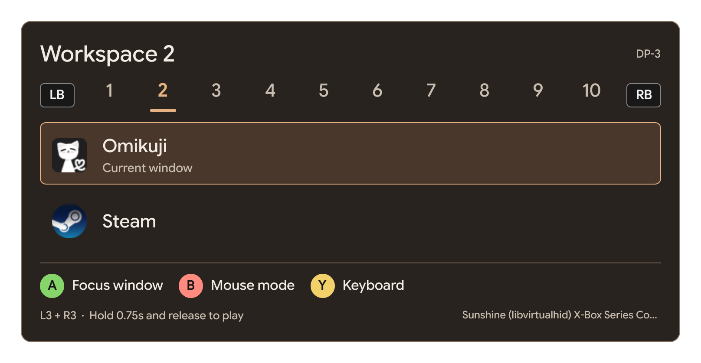

hyprcontroller: using my desktop with a gamepad
I started a new project! It's called hyprcontroller, and the idea is to use my Hyprland desktop with a controller. It's still a work in progress, but it's already doing enough that I wanted to write something about it.
Why I wanted this
I use Sunshine and Moonlight to stream games from my PC. Playing with a controller is fine, but sometimes my workspaces have some window bugs so I need to switch workspaces or use another window. On my laptop, I have the same Hyprland shortcuts, so those can get in the way of controlling the host. On my phone, I don't exactly have a mouse next to me either, haha.
I wanted to open a little desktop menu with the controller, do whatever I needed, and go back to the game.

The current picker, thanks to codex for the UI.
What it does so far
Hold both stick buttons (L3 + R3), then release them to open the switcher. From there, I can change workspaces with LB / RB, pick a window with the D-pad or left stick, and select it with A.
After selecting a window, it stays in desktop mode. The left stick moves the mouse, the right stick scrolls, A is left click, and B is right click. Holding A lets me drag things too.
Y opens the on-screen keyboard from my existing Quickshell setup, so I can move the pointer and click its keys. That part depends on a compatible shell keyboard; hyprcontroller doesn't include its own yet. Start brings the window switcher back. When I'm done, I return to the game workspace, hold L3 + R3 again, and release to give the controller back to the game.
Some issues...
One of the first problems showed up in HoloCure. I could navigate the desktop menu, but the game underneath was reacting to those same buttons. That happened both with a local controller and through Moonlight.
The current version uses a virtual controller to pass input to the game during gameplay and keep it neutral while I'm using desktop mode. Desktop mode also stays active after changing windows or workspaces, until I explicitly return to playing. That fixed the behavior I was seeing in HoloCure. It doesn't pause the game, though.
Still working on it!
It's built with Python and Quickshell, and so far I've been testing it on my own CachyOS setup, with an Xbox 360 controller and Sunshine/Moonlight. I still need to try more games, controllers, and screen setups before I can say how well it works elsewhere.
I'm happy with how it's going so far. I'll add more here once I've spent some more time using it ✦
← back to all posts